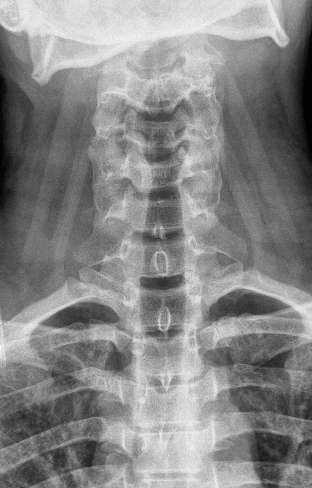
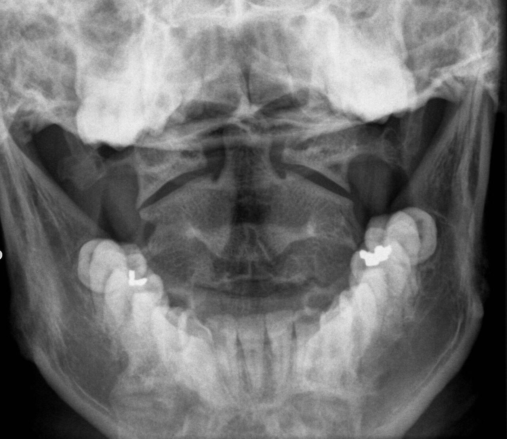
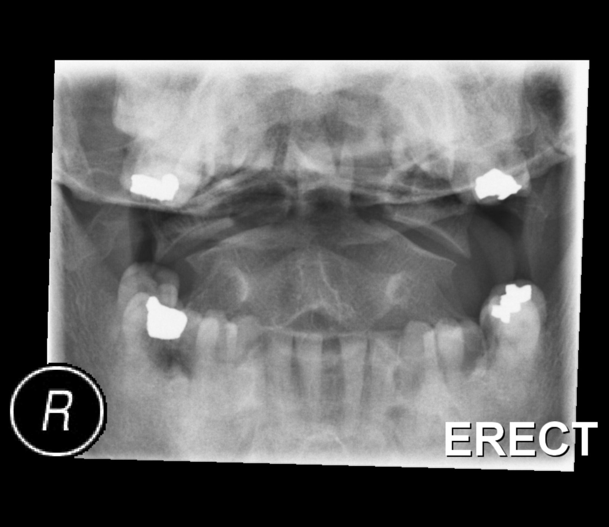
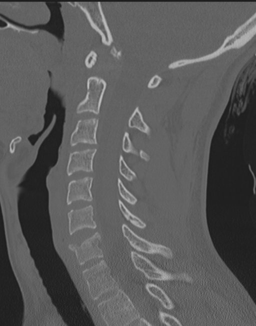
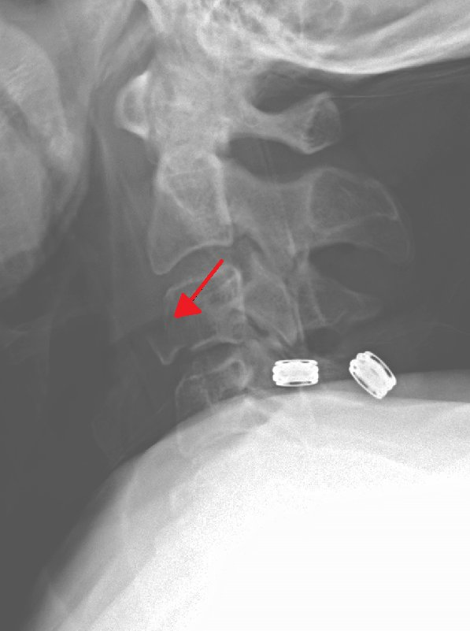
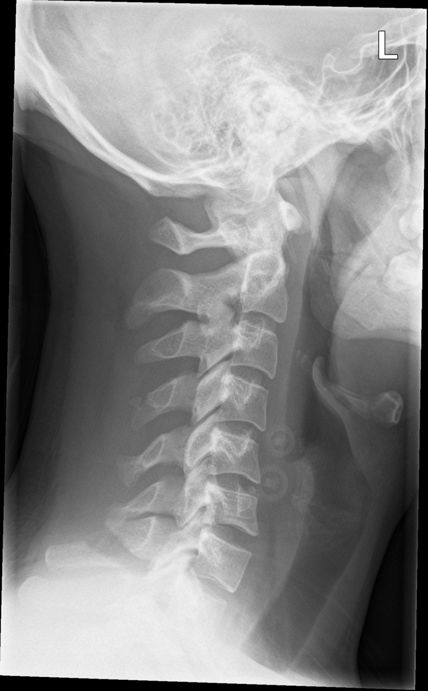

Department of Radiology, UC San Diego Health · Public domain · Wikimedia Commons
Normal cervical spine X-ray (lateral)صورة فقرات رقبية طبيعية (جانبية)Normal · الصورة الطبيعية
الحالة: صورة جانبية طبيعية للفقرات الرقبية (cervical spine) لشاب، نقارن بيها الكسور والخلوع والتغيرات التنكسية.
ما يُرى فيها: الفقرات من C1 إلى C7 مصفوفة بانحناء طبيعي محدّب للأمام (cervical lordosis)، والخطوط الأمامية والخلفية للأجسام الفقرية متصلة بلا انقطاع، ومسافات الأقراص (disc spaces) متساوية.
الوضعية: C-spine lateral

Department of Radiology, UC San Diego Health · Public domain · Wikimedia Commons
Normal cervical spine X-ray (AP)صورة فقرات رقبية طبيعية (أمامية خلفية)Normal · الصورة الطبيعية
الحالة: صورة أمامية خلفية (AP axial) طبيعية للفقرات الرقبية السفلى.
ما يُرى فيها: النواتئ الشوكية (spinous processes) في الخط الأوسط، والأجسام الفقرية متراصّة بالتساوي، ومسافات الأقراص مفتوحة، والفك السفلي يغطي الفقرات العليا.
الوضعية: C-spine AP (axial)

Department of Radiology, UC San Diego Health · Public domain · Wikimedia Commons
Normal open-mouth odontoid X-rayصورة السن الطبيعية بالفم المفتوحNormal · الصورة الطبيعية
الحالة: صورة أمامية خلفية بالفم المفتوح (open-mouth odontoid) طبيعية تُظهر الفقرتين الأولى والثانية.
ما يُرى فيها: السن (dens) في الوسط والمسافتان على جانبيه متساويتان، والحافة الخارجية للكتلة الجانبية للفقرة الأولى (lateral mass of C1) على استقامة حافة الفقرة الثانية بلا بروز.
الوضعية: Open-mouth odontoid (AP)
كسور Fractures

Case courtesy of Andrew Dixon, Radiopaedia.org, rID: 31792 · CC BY-NC-SA 3.0
🩻 ليش نصوّر؟ الصورة الجانبية تُظهر كسر الجزء بين المفصلي لـ C2 مع انزياح أمامي.
للتعليم فقط — مو للتشخيص.
الحالة: كسر في الجزء الخلفي للفقرة الرقبية الثانية (pars interarticularis of C2) بسبب فرط بسط الرقبة.
علامتها بالأشعة: الفقرة الثانية (C2) منزاحة للأمام على الفقرة الثالثة (C3)، مع كسر في قوسها الخلفي.
الوضعية: Cervical spine X-ray
🟢 صورة فقرات رقبية طبيعية (جانبية) Normal cervical spine X-ray (lateral)
Department of Radiology, UC San Diego Health · Public domain · Wikimedia Commons

Cha YH, Cho TH, Suh JK. J Korean Med Sci 2010;25(8):1247 (Fig. 1) · CC BY-NC 3.0 (للموقع الدراسي فقط) · المصدر
Wedge (compression) fracture of a cervical vertebraالكسر الإسفيني (الانضغاطي) لفقرة رقبيةFractures · كسور
🩺 الأعراض Symptoms
Neck painألم الرقبة
Neck stiffnessتيبّس الرقبة
Tenderness over the spineألم عند لمس فقرات العمود
⚠️ Red flags · متى تكون طارئة؟
خدر أو ضعف بالذراعين: يحتاج رنيناً عاجلاً.
🩻 ليش نصوّر؟ الصورة الجانبية تُظهر نقص ارتفاع الجزء الأمامي من جسم الفقرة.
للتعليم فقط — مو للتشخيص.
الحالة: انضغاط الجزء الأمامي لجسم فقرة رقبية بسبب فرط الثني، فيأخذ شكل إسفين.
علامتها بالأشعة: نقص ارتفاع الحافة الأمامية لجسم الفقرة مع بقاء الحافة الخلفية، فيصير الجسم إسفيني الشكل في الصورة الجانبية. وفي هذه الصورة (حسب وصف المقال): كسر إسفيني انضغاطي في C5 وC6، مع انزلاق خلفي بسيط (retrolisthesis) لـ C5 على C6، وبدون خلع في المفاصل الوجيهية (facet joints).
الوضعية: Lateral cervical spine X-ray
🟢 صورة فقرات رقبية طبيعية (جانبية) Normal cervical spine X-ray (lateral)
Department of Radiology, UC San Diego Health · Public domain · Wikimedia Commons

James Heilman, MD · CC BY-SA 4.0 · Wikimedia Commonsالعلامة المرسومة على الصورة من المصدر.
Teardrop fractureكسر الدمعةFractures · كسور
🩺 الأعراض Symptoms
Neck painألم الرقبة
Arm weaknessضعف في الذراع
Leg weaknessضعف في الساقين
Numbnessخدر
⚠️ Red flags · متى تكون طارئة؟
كسر غير مستقر مع خطر إصابة الحبل الشوكي (طارئ).
🩻 ليش نصوّر؟ الصورة الجانبية تُظهر قطعة مثلثة من الحافة الأمامية السفلية للفقرة.
للتعليم فقط — مو للتشخيص.
الحالة: قطعة عظمية مثلثة صغيرة تنفصل من الزاوية الأمامية السفلية لجسم فقرة رقبية.
علامتها بالأشعة: قطعة عظمية على شكل دمعة عند الزاوية الأمامية السفلية لجسم الفقرة (السهم الأحمر من المصدر).
الوضعية: C-spine lateral
🟢 صورة فقرات رقبية طبيعية (جانبية) Normal cervical spine X-ray (lateral)
Department of Radiology, UC San Diego Health · Public domain · Wikimedia Commons

Case courtesy of RMH Core Conditions, Radiopaedia.org, rID: 33847 · CC BY-NC-SA 3.0